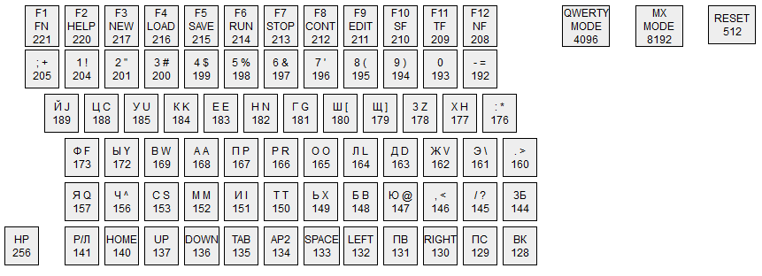

Этот контроллер позволяет подключить PS/2 клавиатуру к компьютеру Специалист. В контроллере используется микроконтроллер ATMega8.
Лицензионное соглашение. AS IS. Вы имеете право использовать эти разработки в любых целях, если принимаете ниже написанное условие. В случае какого-либо ущерба, возникшего по причине использования моих разработок, я не несу никакой ответственности. Вы можете даже удалить копирайт и выдавать их за свои. Но мне было бы приятнее, если копирайт остался на месте.
Все материалы находятся в репозитории https://github.com/alemorf/retro/tree/master/specialist-ps2_keyboard :
Пошивка spec_keyb.hex для ATMega8 в формате Intel HEX, который должен поддерживать любой программатор.
Схема в формате PNG. Так же есть на этой странице ниже.
Печатная плата для ЛУТ в формате DOCX (Microsoft Word).
Исходники прошивки. Что бы их скомпилировать без лишних усилий, вам потребуется среда разработки Code Vision AVR.
Схема и печатная плата в формате программы Proteus.
В Специалисте используется английская раскладка JCUKEN, а не привычная нам QWERTY. При этом русская раскладка совпадает с современной ЙЦУКЕН. Поэтому невозможно настроить соответствие между клавишами PS/2 клавиатуры так, что бы русская и английская надпись на PS/2 клавиатуре одновременно соответствовала Специалисту. Поэтому я сделал сразу два набора соответствий, для русской и для английской раскладки, которые переключаются клавишей Scroll Lock.
В компьютере Специалист MX отличаются коды некоторых клавиш (ESC, TAB, F1 - F11), поэтому для МХ я сделал встроенную коррекцию, которая включаются клавишей Print Screen.
При прошивке микроконтроллера во фьюзах выберите внутренний тактовый генератор 8 МГц. Пример для Code Vision AVR справа.
Контроллер клавиатуры может выполнять сброс компьютера. Для этого при прошивке надо установить фьюз RSTDISBL и подключить выход RESET ATMega8 к кнопке перезагрузки. ВНИМЕНИЕ! Установив RSTDISBL вы теряете возможность перепрошить микроконтроллер в будущем. Я советую вообще не трогать фьюз RSTDISBL или устанавливать его только когда контроллер работает.
Этот контроллер может изменять соответствие клавиш РС и Специалиста во время работы. Для этого надо нажать на нужную кнопку и не отпуская её нажать BREAK. Светодиоды должны последовательно мигнуть. Затем набираете цифрами код клавиши Специалиста и нажимаете ENTER. Ниже указаны коды клавиш Специалиста:
Цифра 0 отвязывает кнопку. Цифра 65534 возвращает контроллер к заводским настройкам. Цифра 65535 сохраняет изменения в энергонезависимую память. При этом, сохраняется и выбранная раскладка (РУС/ЛАТ и МХ/не МХ).
Моя прошивка содержит следующее соответствие:

Программа Настройка раскладки позволяет настроить свою привязку клавиш перед прошивкой. Программа формирует массив чисел, который необходимо вставить в исходники, скомпилировать исходники и прошить микроконтроллер.